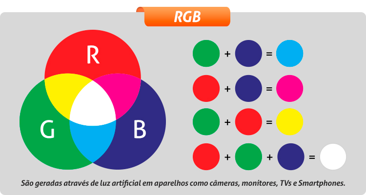
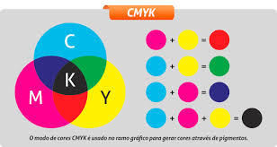

O que é RGB?
O modelo aditivo é um sistema de cores baseado na emissão de luz, usado em telas de TVs, monitores, celulares e projetores. Ele se chama "aditivo" porque as cores são criadas somando luz de três cores primárias: RGB (Red, Green, Blue). Quando essas cores são combinadas em diferentes intensidades, elas formam todas as outras cores. Se os três tons forem emitidos no máximo, o resultado é branco. Se não houver luz alguma, o resultado é preto. Por isso, telas escuras economizam energia em dispositivos com tecnologia OLED, já que os pixels podem ser desligados para criar preto absoluto.
Exemplos de Cores em RGB
Imagens em RGB
Como o RGB funciona no pixel?
Os pixels são os menores pontos que compõem uma imagem em uma tela. Cada pixel contém três subpixels de vermelho (R), verde (G) e azul (B). A intensidade de luz emitida por cada subpixel determina a cor final do pixel. Quando olhamos para uma tela, nosso cérebro mistura essas cores, criando uma imagem colorida contínua. Por exemplo, se um pixel tem seu subpixel vermelho ativado no máximo e os outros apagados, ele aparecerá vermelho. Se todos estiverem ativados no máximo, o pixel parecerá branco.
O que é CMYK?
O modelo subtrativo é um sistema de cores baseado na absorção e reflexão da luz, usado em impressoras, pinturas e artes gráficas. Ele se chama "subtrativo" porque a tinta ou pigmento absorve (subtrai) parte da luz branca e reflete apenas a cor que enxergamos. Suas cores primárias são: Ciano (C – Cyan) Magenta (M – Magenta) Amarelo (Y – Yellow) Ao misturar essas tintas, diferentes cores são criadas. Porém, quando as três cores são misturadas, o resultado não é um preto puro, mas um tom marrom escuro. Por isso, é adicionada uma quarta cor: Preto (K – Key), que melhora o contraste e reduz o uso excessivo de tinta colorida. Esse sistema é usado na impressão de revistas, cartazes e embalagens porque funciona melhor para materiais físicos.
Exemplos de Cores em CMYK
Imagens em CMYK
Diferenças entre RGB e CMYK
| Característica | RGB | CMYK |
|---|---|---|
| Modelo de cor | Aditivo | Subtrativo |
| Uso principal | Monitores e telas | Impressão |
| Composição | Vermelho, Verde, Azul | Ciano, Magenta, Amarelo, Preto |